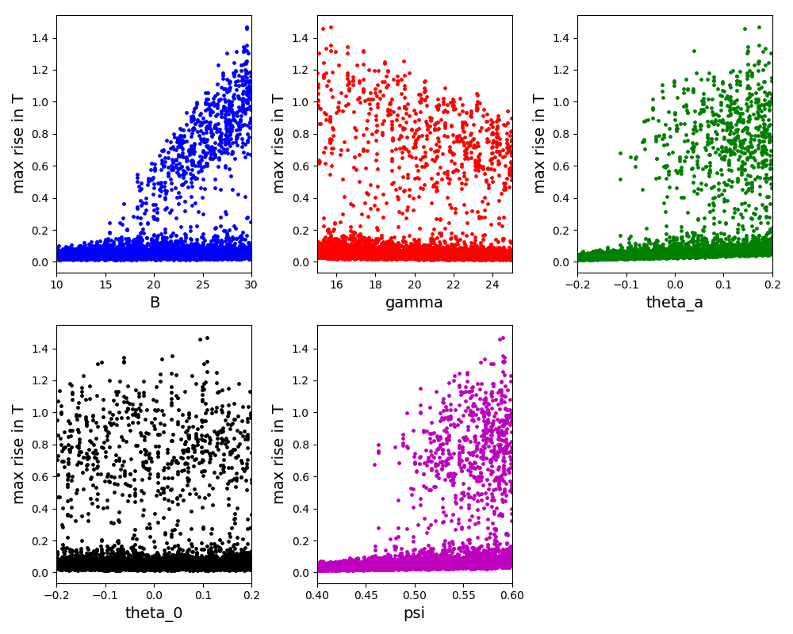

| Sensitivity Analysis Example 1 | Calculation of the sensitivity of the results with respect to the model parameters using forward sensitivity analysis method. |
| Sensitivity Analysis Example 2 | The local derivative-based sensitivity analysis method. |
| Sensitivity Analysis Example 3 | The global screening (Morris) and variance-based sensitivity analysis methods (FAST, Sobol) available in the SALib python software. |
This tutorial illustrates calculation of the sensitivity of the results with respect to the model parameters using forward sensitivity analysis method in DAE Tools.
This model has one state variable (T) and one degree of freedom (Qin). Qin is set as a parameter for sensitivity analysis.
The integration of sensitivities per specified parameters is enabled and the sensitivities can be reported to the data reporter like any ordinary variable by setting the boolean property simulation.ReportSensitivities to True.
Raw sensitivity matrices can be saved into a specified directory using the simulation.SensitivityDataDirectory property (before a call to Initialize). The sensitivity matrics are saved in .mmx coordinate format where the first dimensions is Nparameters and second Nvariables: S[Np, Nvars].
The plot of the sensitivity of T per Qin:
Files
| Model report | tutorial_sa_1.xml |
| Runtime model report | tutorial_sa_1-rt.xml |
| Source code | tutorial_sa_1.py |
This tutorial illustrates the local derivative-based sensitivity analysis method available in DAE Tools.
The problem is adopted from the section 2.1 of the following article:
The model is very simple and describes a simple reversible chemical reaction A <-> B, with reaction rates k1 and k_1 for the direct and inverse reactions, respectively. The reaction rates are uncertain and are described by continuous random variables with known probability density functions. The standard deviation is 0.3 for k1 and 1 for k_1. The standard deviation of the concentration of the species A is approximated using the following expression defined in the article:
stddev(Ca)**2 = stddev(k1)**2 * (dCa/dk1)**2 + stddev(k_1)**2 * (dCa/dk_1)**2
The following derivative-based measures are used in the article:
Derivatives dCa/dk1 and dCa/dk_1 calculated using the forward sensitivity method
Sigma normalised derivatives:
S(k1) = stddev(k1) / stddev(Ca) * dCa/dk1
S(k_1) = stddev(k_1)/ stddev(Ca) * dCa/dk_1
The plot of the concentrations, derivatives and sigma normalised derivatives:

Files
| Model report | tutorial_sa_2.xml |
| Runtime model report | tutorial_sa_2-rt.xml |
| Source code | tutorial_sa_2.py |
This tutorial illustrates the global variance-based sensitivity analysis methods available in the SALib python library.
The problem is adopted from the section 2.6 of the following article:
The model describes a thermal analysis of a batch reactor, with exothermic reaction A -> B. The model equations are written in dimensionless form.
Three global sensitivity analysis methods available in SALib are applied:
Results from the sensitivity analysis:
-------------------------------------------------------
Morris (N = 510)
-------------------------------------------------------
Param mu mu* mu*_conf Sigma
B 0.367412 0.367412 0.114161 0.546276
gamma -0.040556 0.056616 0.021330 0.111878
psi 0.311563 0.311563 0.103515 0.504398
theta_a 0.326932 0.326932 0.102303 0.490423
theta_0 0.021208 0.023524 0.016015 0.074062
-------------------------------------------------------
-------------------------------------------------------
Sobol (N = 6144)
-------------------------------------------------------
Param S1 S1_conf ST ST_conf
B 0.094110 0.078918 0.581930 0.154737
gamma -0.002416 0.012178 0.044354 0.027352
psi 0.171043 0.087782 0.524579 0.142115
theta_a 0.072535 0.042848 0.523394 0.165736
theta_0 0.002340 0.004848 0.008173 0.005956
Parameter pairs S2 S2_conf
B/gamma 0.180427 0.160979
B/psi 0.260689 0.171367
B/theta_a 0.143261 0.154060
B/theta_0 0.177129 0.156582
gamma/psi 0.000981 0.027443
gamma/theta_a 0.004956 0.036554
gamma/theta_0 -0.009392 0.027390
psi/theta_a 0.166155 0.172727
psi/theta_0 -0.016434 0.129177
theta_a/theta_0 0.109057 0.127287
-------------------------------------------------------
---------------------------------
FAST (N = 6150)
---------------------------------
Param S1 ST
B 0.135984 0.559389
gamma 0.000429 0.029026
psi 0.171291 0.602461
theta_a 0.144617 0.534116
theta_0 0.000248 0.040741
---------------------------------
The scatter plot for the Morris method:
The scatter plot for the Sobol method:
The scatter plot for the FAST method:

Files
| Model report | tutorial_sa_3.xml |
| Runtime model report | tutorial_sa_3-rt.xml |
| Source code | tutorial_sa_3.py |

{kind=link}
{kind=link}
{kind=link}